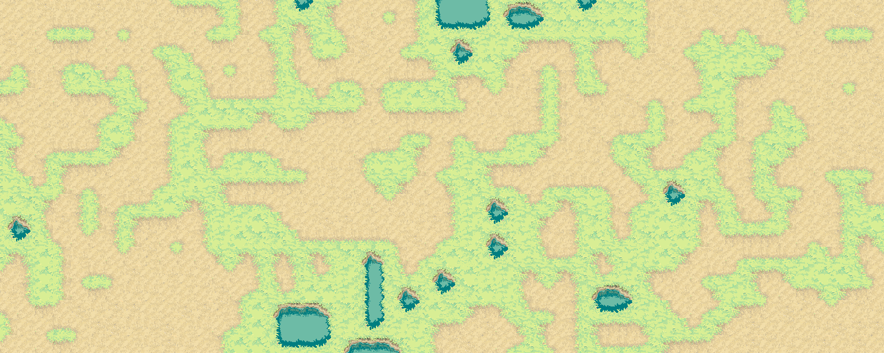
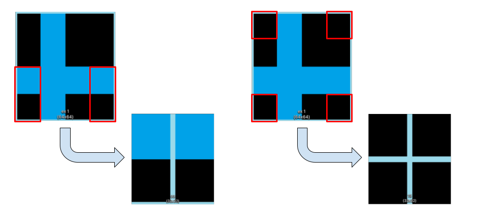
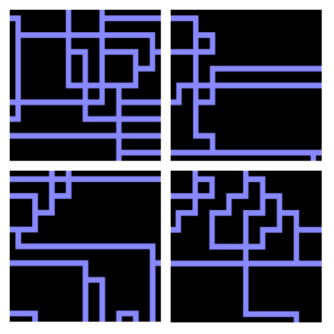
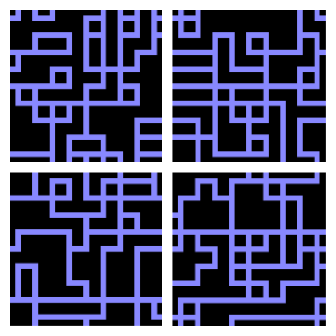
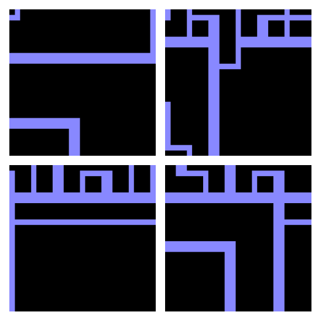
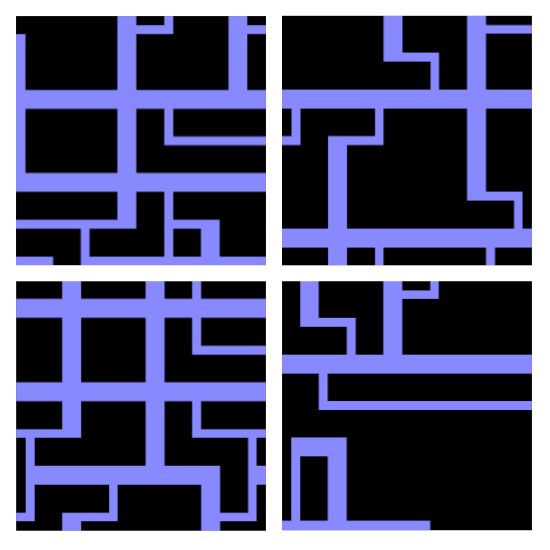
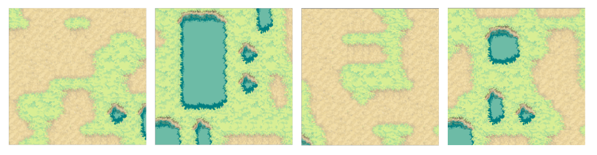
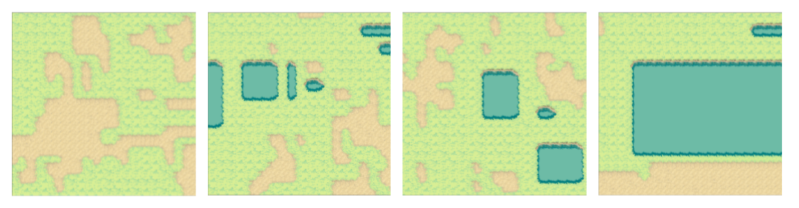

Level Generation with Wave Function Collapse in Unity
Overview
When it comes to developing video games, the task of manually crafting countless unique levels is
quite overwhelming. Fortunately, there are algorithms, capable of creating procedurally generated
levels, which can be used to automate this process. One of these algorithms is called Wave Function Collapse (WFC).
The aim of my thesis is to take a closer look at what makes WFC effective, what its limitations are, and
how it can be extended. I implemented a variety of different modifications and extensions of the
WFC algorithm and tested them with different test scenarios and requirements.
The goal is to investigate the potential of WFC, specifically for procedural level generation from
a tileset, to make the process easier and faster.
This page only presents a summarized overview of my work, but the entire thesis can be read
here.
Technical Aspects
The principles of Wave Function Collapse are based on assuming multiple possible states for each tile slot
of a level, and continuously reducing them down to one final state. Using Unity as the engine,
I implemented an algorithm based on these concepts, that take a pre-made tileset as an input, and
assembles the final level according to user defined tile-connection rules.
This setup was then expanded by scanning an input example picture to generate a usable tileset to be
used in the procedural level generation process. Through customizable parameters, the image sampling
could be additionally influenced to achieve different tile outcomes.
Finally, a variation to the collapsing algorithm was introduced that allows for more option to fine-tune
the resulting outcome, by adjusting the frequency of individual tiles, as well as specific tile
connections that define how often a tile is put next to certain other tiles.
Additionally, each algorithm variation was extensively tested and measured in regard to failure rate
and processing time, to allow for comparision and evaluation.
Gallery


 sampled tileset with tileSize=tileOffset |
 sampled tiles with manually completed connection rules |
 overlapping sampled tileset (tileSize>tileOffset) |
 sampled tiles with manually completed connection rules |

